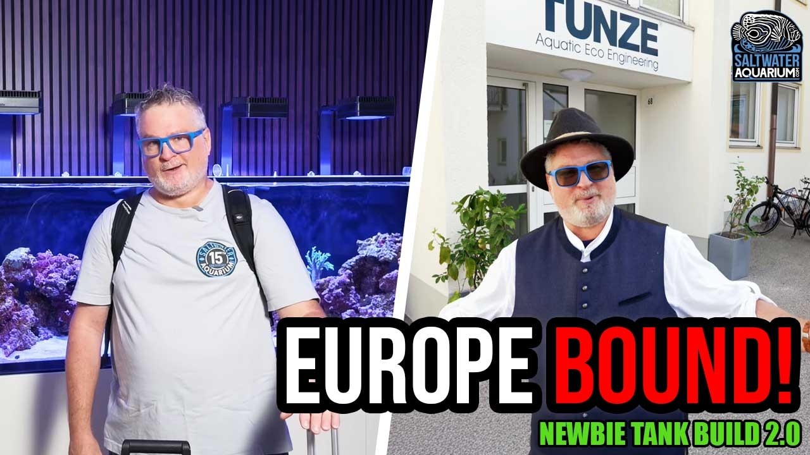

Friday, September 11, 2026 · 31 items · back issues
Howdy, it's Isaac again.
Happy Friday, reefing family, and welcome back to my Weekly Dive.
A lot landed this week.
Here are the biggest things worth knowing:
- Aquashella New Jersey 2026
- Reef Hobbyist Magazine Q3 Out Now
- Increasing nitrogen loading in the Gulf of Mexico undermines coral reef resilience
- The Status of Coral Reefs of the World: 2025 report is out!
- Plus 27 more across wild reefs, husbandry & science, community
Let's dive into the news touching our hobby…
Community4
-
Reef Hobbyist Magazine Q3 Out Now
Reefkeeping's Only FREE Magazine! Worth the read.
Reef Hobbyist Magazine · Sep 1 · reefhobbyistmagazine.com
-
The Legend Returns! Pukani & Tonga-Style Branch Rock is BACK! | Reefapalooza CA 2026
Pukani branch rock from Fiji is back in stock after discontinuation. Serious reefers now have access again to a classic substrate preferred for its structure and biology.
Distribution5 min SaltwaterAquarium.com · SaltwaterAquarium · Sep 7 · youtube.com
-
Custom 8-Foot Reef Aquarium Installation | Complete System & Equipment Tour
Detailed walkthrough of a custom 8-foot peninsula reef system including sump, automation, lighting, and redundancy. Practical system design and equipment choices inform experienced keepers' own setup decisions.
20 min World Wide Corals · Sep 10 · youtube.com
-
Learning all about Perfect Corals and their ecosystem!
A visit to a Florida coral farm behind the scenes. Aquaculture facility tours interest hobbyists, but the excerpt contains no technical detail or business news worth acting on.
Reefs.com · Afishionado · Sep 7 · reefs.com
Husbandry & Science7
-
The chromosomal genome sequence of the staghorn coral, Acropora cervicornis (Lamarck, 1816) (Scleractinia: Acroporidae) and its associated microbial metagenome sequences
Complete genome assembly of staghorn coral Acropora cervicornis with 24,579 protein-coding genes identified and associated microbial metagenomes recovered. Genomic resources for a critically endangered reef-building coral enable research into disease, heat tolerance, and restoration.
Wellcome Open Research · Kara Rising et al. · Sep 9 · doi.org
-
Coral metabolomic diversity is associated with restoration success
Coral metabolite diversity correlates with restoration success in microfragment survival under predation. Understanding which corals survive fragmentation has direct bearing on propagation and restoration practices.
Scientific Reports · Catherine Raker et al. · Sep 7 · doi.org
-
Bioactive Nanocoatings Encode Bacterial Settlement Cues for Coral Restoration
Nanocarrier-delivered bacterial settlement cues improve coral larval recruitment in restoration. Direct application to ex-situ coral propagation and restoration bottlenecks.
ACS Materials Letters · Daniel Wangpraseurt et al. · Sep 8 · doi.org
-
Antioxidant and phytoplankton-enriched microparticle diets mitigate thermal stress in the reef-building coral Stylophora pistillata
Researchers found that antioxidant and phytoplankton-enriched microparticle diets reduced thermal stress in Stylophora pistillata corals. This suggests dietary supplements could help corals tolerate warming, a practical tool for both aquarists and restoration efforts.
+2 similar Environmental Science & Technology · Juan José Dorantes‐Aranda · Sep 5 · doi.org
-
Why do some golden kelp grow faster?
Genetic markers explain roughly half the fourfold variation in golden-kelp blade elongation across 52 individuals, suggesting heritable growth differences. Macroalgal genetics directly inform tank cultivation and strain selection.
Great Southern Reef Foundation — Bluesky · Sep 9 · bsky.app
-
Mechanical Anisotropy, Water Absorption, and Alkali Leaching of Two Regional 3D-Printed Concrete Formulations for Artificial Coral Reef Applications
A study of 3D-printed concrete formulations for artificial reef structures, measuring mechanical anisotropy, water absorption, and alkali leaching. Substrate composition affects tank chemistry and stability; this is reef-building relevant.
Construction Materials · Loan Pham et al. · Sep 7 · doi.org
-
Surviving the long fast: biochemical and photosynthetic acclimation of Synechocystis sp. CCNM 2501 to chronic nitrogen and phosphorus starvation
Cyanobacteria Synechocystis adjusts lipid and pigment production under nutrient starvation. Understanding microalgal responses to nutrient limitation informs cultivation of live food and refugium management.
Frontiers in Marine Science — Journal · Sandhya Mishra · Sep 10 · frontiersin.org
Livestock & Corals2
-
Male #seahorses get pregnant, but do females do the courting?
Study shows male seahorses compete for mates and exhibit complex courtship behavior rather than females driving mate choice. Seahorse reproduction biology is relevant to hobbyists keeping these aquarium ornamentals.
Project Seahorse — Bluesky · Sep 10 · bsky.app
-
41 seahorse species have been recorded on iSeahorse by our incredible community of citizen scientists!
iSeahorse citizen scientists have recorded 41 seahorse species, with six still missing or rarely documented. While seahorses are kept in aquariums, this is primarily a call for field observations of wild populations rather than husbandry or aquaculture information.
Project Seahorse — Bluesky · Sep 4 · bsky.app
Wild Reefs16
-
Increasing nitrogen loading in the Gulf of Mexico undermines coral reef resilience
Science Advances · Jonathan Jung et al. · Sep 9 · doi.org
-
The Status of Coral Reefs of the World: 2025 report is out!
The Status of Coral Reefs of the World 2025 report tracks global hard coral and macroalgae cover over 44 years. This peer-reviewed synthesis of wild reef health is essential for understanding ecosystem trends driving conservation and trade.
International Coral Reef Society — Bluesky · Sep 5 · bsky.app
-
Benthic Community Composition of Coral Reefs Is Associated with the Time Since Last Blast Fishing Event
Benthic community composition on Tanzanian coral reefs correlates with time since blast fishing; recovery patterns suggest blast damage persists for decades. Destructive fishing is a direct threat to wild reefs and informs understanding of reef resilience.
Biology · Alec S. Leitman et al. · Sep 9 · doi.org
-
Rapid loss, and slow recovery, of coral reef structural complexity resulting from a prolonged marine heatwave
Coral habitat complexity loss from marine heatwaves persists longer than recovery, with cascading effects on reef biodiversity. Reef keepers maintain complexity as a core husbandry goal; understanding recovery timescales informs long-term restoration expectations.
Journal of Animal Ecology · Kevin A. Bruce et al. · Sep 9 · doi.org
-
Submarine caves as potential climate microrefugia for symbiotic octocorals
Mediterranean submarine caves may serve as temperature refugia for the gorgonian Eunicella singularis during marine heatwaves. This demonstrates how octocoral physiology and behavior adapt to thermal stress—directly informing aquarium management of slow-growing symbiotic corals.
Frontiers in Marine Science — Journal · Andrea Gori · Sep 10 · frontiersin.org
-
The ocean absorbs 27% of human caused carbon dioxide emissions
Ocean absorbs 27% of human CO2 emissions, driving acidification that lowers seawater pH. Acidification directly threatens coral calcification and reef system chemistry that reefkeepers replicate in tanks.
+1 similar Ocean Acidification Research Center — Bluesky · Sep 10 · bsky.app
-
National Coral Reef Monitoring Program Data Visualization Tool,
NOAA completed 2026 coral-reef monitoring across sanctuaries using a new data visualization tool. Hobbyists tracking wild-reef health trends benefit from accessible institutional monitoring data.
+1 similar NOAA National Ocean Service — Newsletter · Sep 10 · links-1.govdelivery.com
-
🪸 Life is better in color!
September is Coral Bleaching Awareness Month; ICRS and partners are highlighting reef stress through logo bleaching. Bleaching remains the most visible threat to wild reefs and a marker reef keepers track closely.
International Coral Reef Society — Bluesky · Sep 9 · bsky.app
-
Objectives and principles for successful management and conservation of coral reefs and other tropical marine ecosystems
A framework for coral reef management and conservation with five objectives and twelve principles. This is directly relevant to understanding wild reef ecology and conservation drivers that shape the hobby's supply and ethics.
Coral Reefs · Laurence J. McCook · Sep 7 · doi.org
-
A high-resolution digital twin of Oeno Atoll (Pitcairn Islands) through integrated geospatial data
Researchers created a high-resolution digital twin of Oeno Atoll using remote sensing and geospatial data to monitor vulnerable coral ecosystems. Digital monitoring tools like this support reef conservation management in remote, logistically challenging locations.
Frontiers in Marine Science — Journal · Jarbas Bonetti · Sep 11 · frontiersin.org
-
Assessment of Commercially Important and Herbivorous Fish Species Ten Years After the Akumal Fishery Refuge Zone Decree
A 10-year assessment of fish recovery in a Mexican fishery refuge zone shows complex outcomes amid habitat degradation. Understanding wild reef recovery dynamics informs conservation and trade decisions affecting the hobby.
Diversity · Ariadna Mendieta Romero et al. · Sep 7 · doi.org
-
The influence of marine invasive species on native seagrasses: a brief overview highlighting research gaps and biases
Literature review examines how invasive species threaten native seagrass ecosystems and their communities. Seagrass beds harbor reef-associated fauna and reflect ecosystem stress relevant to reef conservation.
Frontiers in Marine Science — Journal · Pedro A. Quijón · Sep 10 · frontiersin.org
-
Interactions Between Environmental and Anthropogenic Stressors Affecting Coral Bleaching and Mortality in Kāneʻohe Bay, O‘ahu
A literature review examines interactions between climate (rising temperature, algae blooms) and local stressors (tourism) driving bleaching and mortality in Hawaiian reefs. Synthesis of environmental and anthropogenic bleaching drivers applicable to reef science broadly.
Scholarly review . · Zizi Dai · Sep 9 · doi.org
-
Could moving kelp-covered rocks give degraded reef habitat a head start?
Researchers in Tasmania transplanted kelp-covered boulders to urchin-degraded reef habitat as a restoration trial. Kelp ecosystems overlap with cold-water reef conservation, relevant to broader reef restoration science.
Great Southern Reef Foundation — Bluesky · Sep 6 · bsky.app
-
ENSO-related variability in typhoon-induced high-wave exposure along the Guangdong coast
Study links ENSO patterns to typhoon-driven wave exposure on China's coast. Understanding how climate cycles affect coastal reef habitats informs reef conservation strategy.
Frontiers in Marine Science — Journal · Jinjun Li · Sep 11 · frontiersin.org
-
Coral reef exposure increases aerosol and cloud condensation nuclei over the Great Barrier Reef
In situ aerosol measurements over the Great Barrier Reef show reefs contribute to atmospheric aerosol and cloud nuclei loading. This is atmospheric chemistry tied to reef presence; interesting but tangential to reef keeping and coral husbandry.
Aerosol Research · Juha Sulo et al. · Sep 9 · doi.org
Events1
-
Aquashella New Jersey 2026
Aquashella New Jersey 2026 takes place on September 12–13, 2026, at the New Jersey Convention & Exposition Center in Edison, New Jersey.
Aquashella · Sep 1 · aquashella.com
Resource

How to Prep Your Reef Tank Before Going on Vacation | European Tour Teaser | Newbie Tank Build 2.0Vacation prep for reef tanks, including auto top-off, RO/DI staging, and dinoflagellate outbreak prevention. Practical guidance on tank stability and pest prevention during owner absence.
6 min SaltwaterAquarium.com · SaltwaterAquarium · Sep 8 · youtube.com
Get it in your inbox
One email a week, free. Every item links to its source.